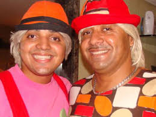

Carreira de Tirulipa
Ele seguiu os passos de humorista: com 10 anos de idade, já imitava seu pai e apresentava com ele espetáculos no circo da família, onde atuava como Tiririca Jr., porém, com o passar do tempo, resolveu não apenas imitá-lo, e assim desenvolveu sua identidade própria. Entre os 15 e os 23 anos, fez parte de uma banda de forró.
Começou seu trabalhou na televisão pela TV Diário, em 2005. Paralelamente, entre 2007 e 2011, trabalhou com seu pai no programa Show do Tom, da RecordTV, apresentado por Tom Cavalcante. Entre 2013 e 2014, apresentou o quadro Saco de Risada no Domingão do Faustão.
Depois do seu sucesso no programa Domingão do Faustão, Tirullipa começou a apresentar uma série de espetáculos no Brasil inteiro, nomeada Enchendo seu Saco de Risada. O primeiro espetáculo aconteceu nos dias 18 e 19 de dezembro de 2015, em Fortaleza. Com o sucesso, o humorista fez uma nova temporada do espetáculo em 2016, desta vez começando pela cidade de Olinda.
